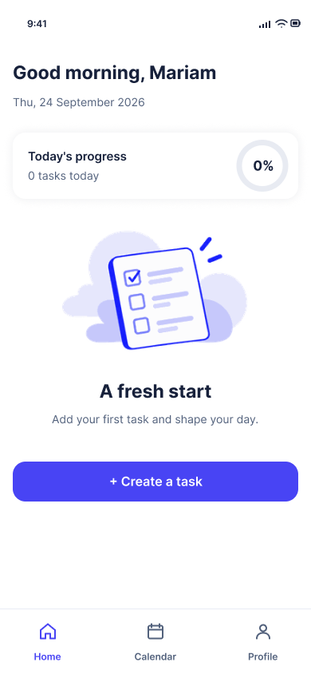
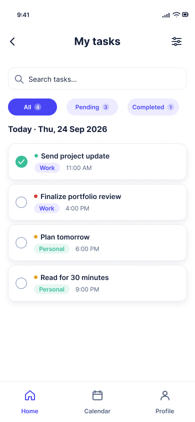
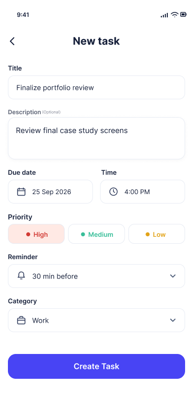
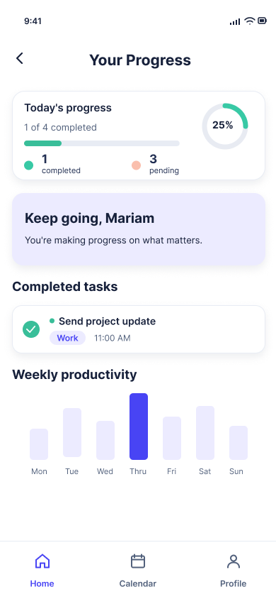

Make planning feel manageable
How might a task app help someone capture work, notice what matters next and track progress without crowding the interface?
A task management app concept exploring a calmer way to create, organize and complete everyday tasks.


NEXORA was created as a UI/UX design exercise for a Top Edge Technologies interview task. The assignment gave me an opportunity to explore a mobile experience that keeps task creation, priorities, progress and everyday planning connected.
How might a task app help someone capture work, notice what matters next and track progress without crowding the interface?
I designed the mobile screens and key task-management states in Figma, from first-use home to task creation, editing, calendar and progress.
The Figma file includes home, task lists, detail and edit forms, calendar, profile, preferences, and completion or delete-confirmation states.
This flow describes the design's intended interaction sequence; it is not being presented as a validated user journey.
The first-use home gives a clear starting point with an invitation to create a task.
Set the title, optional description, date, time, priority, reminder and category.
Review tasks, filter by status, open task details and edit tasks when priorities change.
Use the calendar, progress summary and completion feedback to understand the day.
The images below are exported directly from the original NEXORA Figma file.
A welcoming empty state with one obvious next action.

Important task details grouped into one clear form.
Status filters keep the task list scannable.

Visible feedback for completed and pending work.
Today's progress is summarized as completed and pending tasks, while the progress view gives a percentage overview. This helps users see the day at a glance.
Priority, deadline, reminder and category are shown together in the task form rather than dispersed across separate settings screens.
First-use and empty calendar states guide the next action, a completion dialog acknowledges success, and deletion requires confirmation.
The experience covers creation, editing, completion, deletion and empty states—not only a polished dashboard.
Repeated navigation, card patterns and input styling aim to help the whole set of screens feel connected.